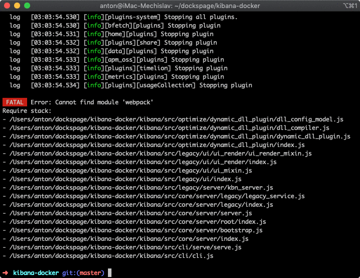
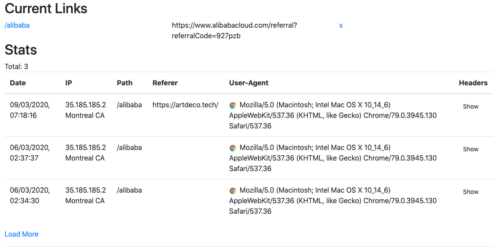

##! 6 March Fri
Slept long even though I went to bed at 3am, only woke up by 3.30 as well because of sleep debt from yesterday. I wanted to get access to the logs from ElasticSearch, but via Kibana, so the question was, how to setup _Kibana_. I used to have an older image with stripped dependencies, but for version 6, so I started working on updating to version 7, using the same method with `install-deps` that tries to start the server and listens for errors.
I got to the stage where I could run the `install-deps` script that install dependencies that are missing. A couple of more internal `node_modules` were added, like ``analytics`` and ``ui-shared-deps``. The _Interpreter_ plugin [now requires](https://github.com/elastic/kibana/blob/5c436534d61e20c88fbecb1108e674c8d413d381/packages/kbn-interpreter/package.json#L12) babel runtime as prod dependency... Ui plugin requires Webpack as prod dependency... kbn-i18n requires react as prod dependency... I've abandoned trying to remove webpack as it seems like the ui is tightly coupled to it. It seems crazy to me that you need to run webpack to run a UI server. Usually people build their UI, not serve it with a build tool. Although I was initially upset about loosing an hour on this and not being able to achieve the same result as before, it actually proved my point about the Open Source vendor lock, how Webpack is so integrated into systems that you have to run it for your project to work.

After not succeeding with the upgrade, I left things where they were and moved on to implement my own UI for the admin panel in `artdeco.tech` that would query hits data from _ElasticSearch_ using its API. I got experience in querying data records from the ES and also learned to use pagination, implementing the "LOAD MORE" button in the admin UI.

Working on the system made me think more about the _Irio_ framework that could work as a unified solution for full-stack apps where types are kept as XML so that they can be compiled with Closure.